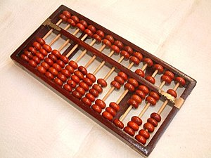
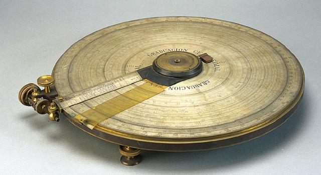
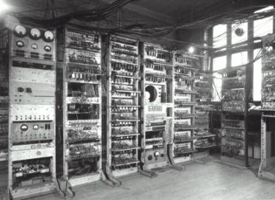

Historia de las computadoras
Todo comenzó con máquinas destinadas a manejar números, es así como nos remitimos a él Ábaco, inventado por los babilonios allá por el año 1000 A.C. Utilizado sobre todo por los chinos para la realización de operaciones sencillas

Justo antes de morir en 1617, el matemático escocés John Napier (mejor conocido por su invención de logaritmos) desarrolló un juego de palitos para calcular a las que llamó: Napier Bones. Así llamados porque se tallaron las ramitas de hueso o marfil, los bones incorporaron el sistema logarítmico.
En 1621 la primera regla deslizante fue inventada por el del matemático inglás William Oughtred. La regla deslizante (llamó Círculos de Proporción) era un juego de discos rotatorios que se calibraron con los logaritmos de Napier.

En 1623 la primera calculadora mecánica fue diseñada por Wilhelm Schickard en Alemania. Llamado El Reloj Calculador, la máquina incorporó los logaritmos de Napier, hacia rodar cilindros en un albergue grande.
Uno de los antepasados más directos de la computadora actual, fue creada por el científico francés Blaise Pasca en el siglo XVII (1642). A sus 18 años, Pascal invento su primera máquina calculadora, capaz de sumar y restar.
Fué en 1830, cuando se establecieron los principios de funcionamiento de las modernas computadoras. Su paternidad se debe al matemático inglés Charles Babbage, quien tras lanzar en 1822 la denominada maquina diferencial, con nada menos que 96 ruedas dentadas y 24 ejes, se lanzó en pos de su proyecto más relevante: La máquina analítica (1833).
En 1944 se construyó en la Universidad de Harvard, la Mark I, diseñada por un equipo encabezado por Howard H. Aiken. Esta máquina no está considerada como computadora electrónica debido a que no era de propósito general y su funcionamiento estaba basado en dispositivos electromecánicos llamados relevadores.
En 1947 se construyó en la Universidad de Pennsylvania la ENIAC (Electronic Numerical Integrator And Calculator) que fue la primera computadora electrónica, el equipo de diseño lo encabezaron los ingenieros John Mauchly y John Eckert. Esta máquina ocupaba todo un sótano de la Universidad, tenía más de 18 000 tubos de vac&iaute;o, consumía 200 KW de energía eléctrica y requería todo un sistema de aire acondicionado, pero tenía la capacidad de realizar cinco mil operaciones aritméticas en un segundo.

La 'EDVAC' (Electronic Discrete Variable Automatic Computer) por sus siglas en inglés, fue una de las primeras computadoras electrónicas. A diferencia de la ENIAC, no era decimal, sino binaria, y tuvo el primer programa diseñado para ser almacenado.
